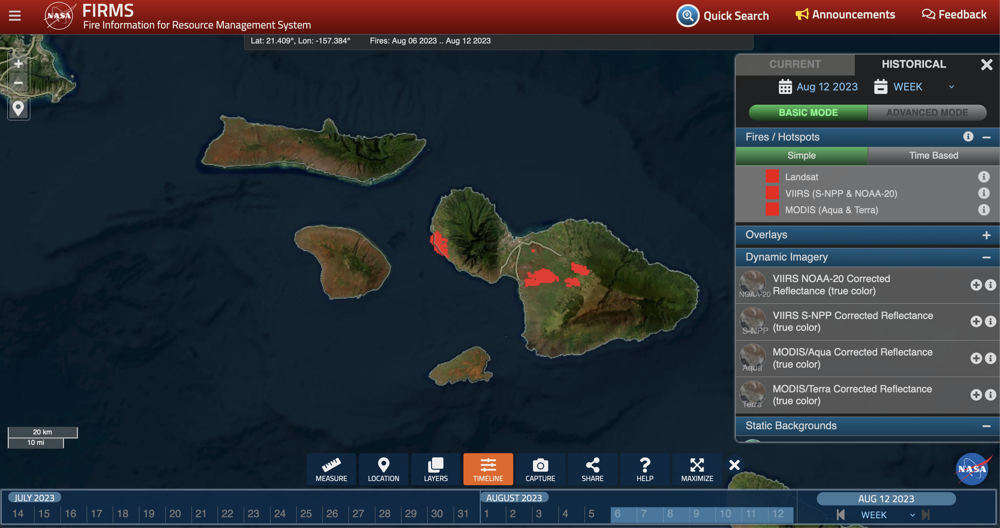
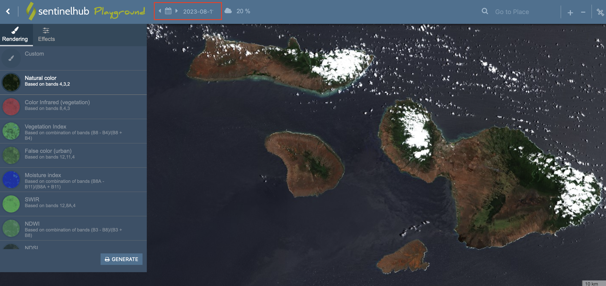

Maui Nui Food Security Data Visualization Project
Satellite Data to Support Maui Fire Response
Overview | Building Damage | Wildfire Monitoring | Imagery | How to HelpOverview
The Maui County Food Security Data Visualization Project is a partnership between Maui United Way, Responsible Markets (Maui ESG Project), University of Hawaii, and NASA Acres/NASA Harvest, funded by NASA. It aims to address critical data gaps in Maui County related to food insecurity and climate change with satellite imagery and machine learning.
Satellite data also allows us to better understand the evolution and impact of the wildfires on Maui (and in the future, how to anticipate or prevent them). There is an abundance of information online about the fires including satellite data, but it can be hard to sort through everything. On this page, we organize the sources of satellite data related to the fires and share resources for accessing this satellite data and derived products.
Building Damage
Microsoft AI for Good Building Damage Assessment
The Microsoft AI for Good geospatial team used machine learning and very high resolution satellite imagery from Planet Inc's SkySat satellite constellation to identify damaged buildings in Lahaina following the wildfires.
Wildfire Monitoring
NASA Fire Information for Resource Management System (FIRMS)
The NASA Fire Information for Resource Management System (FIRMS) combines data from multiple satellites to detect active wildfires, primarily by looking for the strong heat signature of fires. Their visualization dashboard shows locations where active fires were detected in the most recent satellite observations.
Satellite Imagery
Lāhainā Fire
Kula/Upcountry Fire

How to access satellite data
Satellites launched by space agencies are freely available (and can be explored below), but are at a lower resolution. Most satellite datasets collected by NASA and European Space Agency satellites are available publicly on the same day the satellite observations are taken.
The high-resolution satellites from Planet, Inc. used to generate some of the products above is not generally freely available, so we do not provide instructions on accessing those data products here.
Sentinel-2 SentinelHub Playground
The SentinelHub Playground makes data from the Sentinel-2 satellites available to explore in your web browser. The date of the imagery can be controlled in the calendar icon on the webpage header (highlighted by a red box in the image above). Sentinel-2 images are captured at least every 5 days, at approximately 10:00am local time. The last Sentinel-2 images over Maui were taken on August 8, so the next image should be availalbe on August 13.
NASA Active Fire Data
This website provides the raw geospatial data of active fire detections from the NASA MODIS, VIIRS, and Landsat satellites to generate the map on the NASA Fire Information for Resource Management System linked above. You can access the data by downloading the files or using their API.